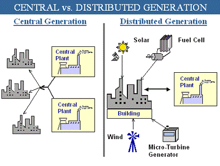
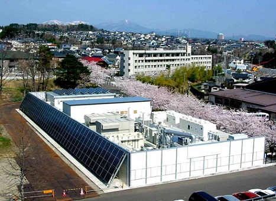

Электросети
Докладчик: Сарафанов Андрей, ВМК.
Передача электроэнергии
- Электрические сети
- Потери в электрических сетях
- Развитие электросетей
Электрические сети
Основной способ передачи электроэнергии на настоящий момент.
$\Delta P = I^2R$ - потери мощности на линии,
$P = IU$ - полная мощность.
Высокие мощности целесообразно передавать при высоком напряжении, но это непростая техническая задача.
Уровни напряжения:
от: свыше 750кВ (сверхвысокий)
до: 220В и ниже (низкий)
Высокое напряжение - магистральные сети, малое - доведение для потребителя.
Электрические сети

Структура электросети США
Электрические сети
Потери энергии в ЛЭП
Основные потери в ЛЭП связаны с сопротивлением сети.
Например, при передаче энергии с мощностью 1ГВт на расстояние около 100км потери составляют
- при напряжении 765кВ - 0.5% - 1.1%
- при напряжении 345кВ - 4.2%
Слишком сильно повышать напряжение тоже нельзя, возникает коронный разряд. Связанные с ним потери могут превосходить выгоду, полученную из-за уменьшенной силы тока.
Электрические сети
Потери энергии в ЛЭП
Коронный разряд
Развитие электросетей
Распределённая энергетика
Часть энергии вырабатывается локально, а не получается из центрального источника.
Зачастую используются возобновляемые источники энергии.
|

Концепция |

Микроэлектростанция, Сендай, Япония |
Развитие электросетей
Распределённая энергетика
Преимущества распределённой энергетики:
- Снижаются потери при передаче энергии.
- Снижается зависимость от центрального источника, смягчаются последствия аварий.
- Возобновляемые источники энергии обычно лучше с экологической точки зрения.
Недостатки:
- В настоящее время отказ от центральной энергетики не представляется возможным.
- Многие возобновляемые источники энергии не отличаются надёжностью.
Развитие электросетей
Умные сети электроснабжения
Использование современных информационных технологий для увеличения эффективности энергетики.
- Повышается надёжность систем, скорость и простота ремонта.
- Позволяет сглаживать последствия неравнемерного потребления электроэнергии.
- Ветроэнергетика, солнечная энергетика отличаются непостоянством, требуются сложные системы управления.
Развитие электросетей
Умные сети электроснабжения
Основные опасения, связанные с умными элестросетями, основываются на том, что передача управления электронным системам снижает прозрачность, давая управляющим органам избыточный контроль и возможность для обмана.
К тому же, умные электросети более подвержены опасности хакерских атак, что также является причиной для их критики.